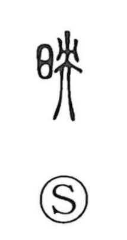

映

Uncategorized
Kun: utsuru, utsusu, haeru | On: ei
to reflect ・ to project ・ to shine
Explanation
A phono-semantic compound with 日 “sun” providing the light-based sense and 央 as the phonetic. Shirakawa notes that 央, which also underlies 英 “flower’s beauty,” carries an aura of flourishing beauty and serves as the on-reading marker that yields ei. With sunlight as its stage and 央’s elegant resonance, 映 came to express the way rays of light make things glow, stand out, and appear again—being reflected, projected, or shown brightly, hence uses like ‘to reflect,’ ‘to project,’ and ‘to shine.’